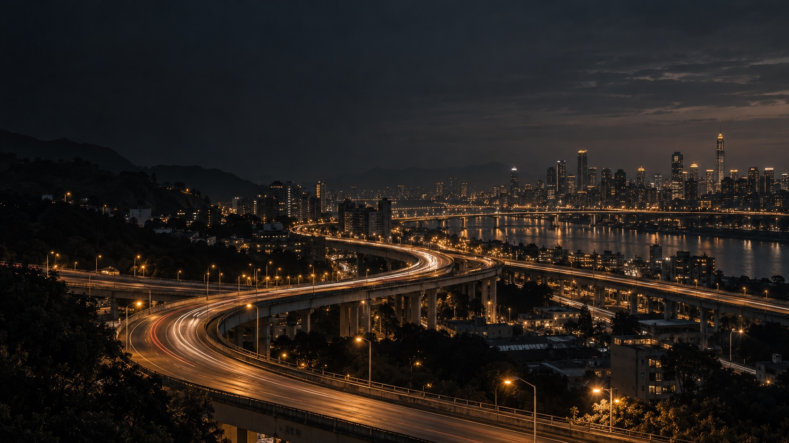

ROBUST / INTELLIGENCE IN CONTEXT
讓 AI 分析
走進真實場域
羅伯斯特結合影像辨識、物件追蹤、資料分析與軟硬體整合，提供貼近場域需求的 AI 解決方案。從智慧交通分析到客製化 AI 專案，我們把影像與資料轉化為可運用的資訊。
ENGINEERED IN TAIWANVISION / TRACKING / INTEGRATION
我們的技術基礎
影像辨識✦物件追蹤✦資料分析✦軟硬體整合
STREET EYE
一次分析，看見更多交通資訊
TRAFFIC INTELLIGENCE
Street Eye
智慧交通分析與安全診斷服務
以交通轉向量計算為核心，結合車停時間、車流軌跡、潛在碰撞與衝突熱點、平均速率及服務水準分析，讓同一次交通影像分析帶來更多可用成果。透過物件追蹤、再辨識、在地資料與低成本取像方案，降低交通調查對人工逐車計數的依賴。
交通轉向量效率評估安全診斷
約 300個路口・交通轉向量調查
與玖泰交通科技共同承接
ABOUT ROBUST
從問題與場域出發
羅伯斯特有限公司成立於 2020 年 9 月，團隊具備電腦視覺、深度學習、資料分析、嵌入式系統與軟硬體整合經驗。我們從問題與場域出發，進行可行性分析、概念驗證、模型開發與系統整合，協助客戶將 AI 導入實際工作流程。
01 問題與場域可行性分析
02 概念驗證與模型開發
03 演算法優化與系統整合
04 AI 諮詢與教育訓練
START A CONVERSATION
與我們討論您的場域需求
需要交通影像分析、AI 影像識別或系統整合服務，歡迎提供專案背景、使用場域與預期成果，由專人與您聯繫。
交通專案洽詢建議提供：公司或單位名稱、聯絡方式、調查地點與路口數、預定時段、影像來源及需求成果。
洽詢交通分析專案